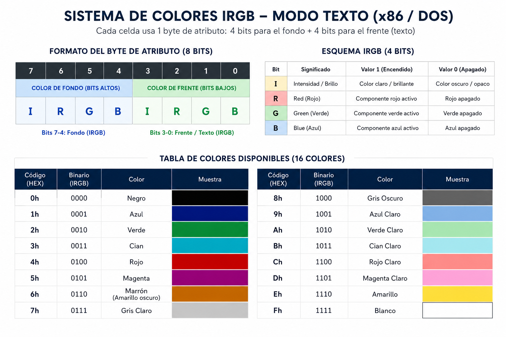

Esta práctica tiene como objetivo lograr que aprendas lo siguiente:
Una interrupción es una señal que le pide al procesador que detenga un momento lo que está haciendo y ejecute una tarea especial del sistema (como pintar un pixel, leer el teclado o terminar un programa). En ensamblador las llamamos usando la instrucción INT seguida del número de interrupción.
INT 10h, INT 16h): Funciones de muy bajo nivel integradas en la tarjeta madre de la computadora. Controlan directamente el video y el teclado.INT 21h): Funciones del sistema operativo, útiles para tareas como imprimir frases completas de forma sencilla.Comencemos a crear nuestro programa. Abre tu editor de código y prepara tu primer archivo bajo el nombre practica[NombreApellido].asm. En este laboratorio trabajaremos directamente con subrutinas (CALL y RET) para organizar nuestro código desde el principio.
Lo primero que debe hacer nuestro programa es limpiar la pantalla y configurar el modo de video correcto.
La interrupción para el video es la INT 10h. Dado que esta interrupción controla muchas cosas, debemos decirle qué acción específica deseamos realizar cargando valores en los registros:
AH es el "registro de función". Al cargar AH = 00h, le indicamos al BIOS que queremos Establecer el Modo de Pantalla.AL indica qué modo queremos activar. Al cargar AL = 03h, seleccionamos el Modo Texto Estándar de 80 columnas por 25 filas a color.org 100h
section .text
main:
CALL IniciarModoTexto ; Llamamos a la subrutina para configurar la pantalla
; Terminar el programa
INT 20h ; Concluye la ejecución y regresa al sistema operativo
; ================= SUBRUTINAS =================
IniciarModoTexto:
MOV AH, 00h ; AH = 00h selecciona la función de configurar modo
MOV AL, 03h ; AL = 03h selecciona el modo de texto 80x25
INT 10h ; Llamamos a la interrupción de video del BIOS
RET ; Regresar a donde fuimos llamados
En el modo de texto estándar (03h), la pantalla se comporta como una cuadrícula:
0 a 79).0 a 24).(0, 0).Antes de imprimir algo en una posición específica, debemos mover el cursor a esa coordenada. Para ello, crearemos la subrutina CentrarCursor usando la función 02h de la INT 10h:
AH = 02h: Código de la función de mover cursor.BH: Número de la página de video (usaremos la página 0d por defecto).DH: Número de fila (usaremos la 10 para estar cerca del centro).DL: Número de columna (usaremos la 25).mainAgrega la subrutina en la sección de subrutinas:
CentrarCursor:
MOV AH, 02h ; AH = 02h selecciona la función de mover cursor
MOV BH, 0d ; BH = 0d indica la página de video 0 (la activa)
MOV DH, 10 ; DH = 10 es la fila de destino (eje Y)
MOV DL, 25 ; DL = 25 es la columna de destino (eje X)
INT 10h ; Llamamos al BIOS para mover el cursor
RET
Modifica tu main:
main:
CALL IniciarModoTexto
CALL CentrarCursor ; <--- Nueva llamada agregada
INT 20h
Cada celda de la pantalla de texto contiene dos datos: el carácter que se muestra y su color. El color de cada carácter se define usando un único byte (8 bits) conocido como byte de atributo.
Este byte se divide en dos partes:
Cada grupo de 4 bits sigue el formato IRGB:
I (Intensidad / Brillo): Si es 1, el color es claro y brillante; si es 0, es oscuro u opaco.R (Red / Rojo)G (Green / Verde)B (Blue / Azul)Estas combinaciones nos permiten desplegar hasta 16 colores diferentes en la consola DOS:

Supongamos que queremos mostrar texto en letras blancas brillantes (Fh o 1111 en binario) sobre un fondo azul (1h o 0001 en binario):
000111111Fh (en binario: 0001 1111).Para imprimir un carácter usando este atributo, crearemos la subrutina PintarCaracter usando la función 09h de la INT 10h:
AH = 09h: Función de escribir carácter y atributo.AL: Código ASCII del carácter que queremos escribir (por ejemplo, 'X').BH: Página de video (0d).BL: Byte de atributo de color (1Fh).CX: Cantidad de veces que se repetirá el carácter horizontalmente (escribiremos 1).mainAgrega la subrutina:
PintarCaracter:
MOV AH, 09h ; AH = 09h selecciona escribir carácter y atributo
MOV AL, 'X' ; AL tiene el carácter a imprimir
MOV BH, 0d ; BH = página de video 0
MOV BL, 1Fh ; BL = Atributo calculado (Fondo azul, letras blancas)
MOV CX, 1d ; CX = imprimir el carácter una sola vez
INT 10h ; Llamamos al BIOS
RET
Modifica tu main:
main:
CALL IniciarModoTexto
CALL CentrarCursor
CALL PintarCaracter ; <--- Nueva llamada agregada
INT 20h
Ensambla y ejecuta tu programa. Deberías ver una letra ‘X' pintada en color blanco con fondo azul cerca del centro de la pantalla. Sin embargo, notarás que la ventana se cierra casi instantáneamente.
Para evitar que el programa se cierre de golpe antes de que podamos ver el resultado, debemos pausar el programa y esperar a que el usuario presione una tecla.
Usaremos la interrupción del BIOS para teclado INT 16h con la función AH = 00h, la cual detiene el programa en espera de una pulsación de tecla y retorna su código ASCII en AL.
main y la subrutina abajo:Modifica tu main:
main:
CALL IniciarModoTexto
CALL CentrarCursor
CALL PintarCaracter
CALL EsperarTecla ; <--- Nueva llamada agregada
INT 20h
Agrega la subrutina:
EsperarTecla:
MOV AH, 00h ; AH = 00h selecciona la función de leer teclado
INT 16h ; Llamar al BIOS (el programa se detiene aquí)
RET
Ensambla y ejecuta. Ahora el programa se mantendrá en pausa mostrando la ‘X' coloreada en pantalla, y solo se cerrará cuando presiones cualquier tecla.
Escribir carácter por carácter con INT 10h / AH = 09h sería sumamente largo para textos extensos. Para imprimir frases completas usaremos la función 09h de la interrupción de MS-DOS INT 21h:
DX: Dirección de memoria de inicio de la cadena de texto..data) y terminar obligatoriamente con el carácter $.Además, el BIOS cuenta con hasta 8 pantallas virtuales o "páginas" (0 a 7). La función de Cambiar la Página Activa (
INT 10h / AH = 05h
) define cuál de esas páginas se muestra en el monitor, lo que nos permite alternar entre pantallas completas instantáneamente.
Modificaremos el código para que en lugar de pintar una sola ‘X' (eliminamos CALL PintarCaracter), muestre un mensaje en la página 0, espere una tecla, cambie a la página 1, muestre otro mensaje allí y termine.
Modifica tu archivo completo para que quede así:
org 100h
section .data
msgPagina0 db 'Estas en la pagina 0. Presione una tecla...$'
msgPagina1 db 'Ahora cambiaste a la pagina 1! Fin del programa.$'
section .text
main:
CALL IniciarModoTexto
; --- Trabajar en la Página 0 ---
MOV BH, 0d ; Seleccionar página de video 0 para centrar el cursor
CALL CentrarCursor
MOV AH, 09h ; Imprimir el mensaje de la página 0 usando DOS
MOV DX, msgPagina0
INT 21h
CALL EsperarTecla ; Detener pantalla esperando teclado
; --- Cambiar a la Página 1 ---
CALL CambiarAPagina1
MOV BH, 1d ; Seleccionar la página de video 1 para las funciones del cursor
CALL CentrarCursor
MOV AH, 09h ; Imprimir el mensaje de la página 1 usando DOS
MOV DX, msgPagina1
INT 21h
CALL EsperarTecla ; Esperar tecla final antes de salir
INT 20h ; Finalizar programa
; ================= SUBRUTINAS =================
IniciarModoTexto:
MOV AH, 00h
MOV AL, 03h ; Limpia pantalla y define modo texto 80x25
INT 10h
RET
CentrarCursor:
MOV AH, 02h
; BH define en qué página queremos mover el cursor (se asigna en main)
MOV DH, 12 ; Fila central
MOV DL, 18 ; Columna inicial
INT 10h
RET
CambiarAPagina1:
MOV AH, 05h
MOV AL, 01h ; Activar y mostrar la página 1 en el monitor
INT 10h
RET
EsperarTecla:
MOV AH, 00h
INT 16h ; Pausa esperando una pulsación
RET
Ensambla y ejecuta esta versión final. Verás el flujo completo: mostrará un texto en la página 0, al presionar una tecla cambiará a la página 1 mostrando otro texto, y finalizará tras la segunda pulsación.
⚠️ Paso de Personalización Obligatoria: Aplica los siguientes cambios de personalización antes de guardar el archivo:
msgPagina0 en la sección .data para que incluya tu primer nombre, primer apellido y tu número de carnet de la universidad. Por ejemplo: msgPagina0 db 'Estas en la pagina 0 - [Oscar Menjivar - 00068422]. Presione una tecla...$'.CentrarCursor, la fila no debe ser 12 por defecto. Debe ser la fila resultante de la operación: 10 + (último dígito de tu carnet módulo 5). Por ejemplo, si tu carnet termina en 7, la fila será 10 + (7 mod 5) = 12. La columna no debe ser 18, sino: 15 + (penúltimo dígito de tu carnet).Guarda este archivo final modificado como tu primer entregable de la práctica (
practica[NombreApellido].asm
).
INT 10h)AH = 00h (Establecer Modo): AL = Código de modo (ej. 03h texto 80x25).AH = 02h (Mover Cursor): BH = Página, DH = Fila, DL = Columna.AH = 05h (Cambiar Página Activa): AL = Número de página a mostrar.AH = 09h (Escribir Carácter y Color): AL = Carácter ASCII, BH = Página, BL = Atributo (color), CX = Cantidad de repeticiones.AH = 01h (Cambiar apariencia del cursor): CH = Línea inicio, CL = Línea fin.AH = 03h (Leer posición del cursor): BH = Página. Retorna: DH = Fila, DL = Columna.AH = 08h (Leer carácter y color en cursor): BH = Página. Retorna: AL = ASCII, AH = Atributo.INT 16h / AH = 00h (Leer Teclado): Pausa el programa. Retorna el ASCII de la tecla en AL.INT 21h / AH = 09h (Imprimir Cadena DOS): DX = Dirección del mensaje (debe finalizar con $).INT 20h (Finalizar): Devuelve el control a DOS.A partir del código modular que construiste en el Paso E, crea un nuevo archivo llamado ejercicio[TuNombreTuApellido].asm con las siguientes especificaciones:
Diseña un programa que le permita al usuario elegir el color del texto a mostrar en pantalla:
"Seleccione un color: (1) [Color A] o (2) [Color B]: "INT 16h / AH = 00h). El código ASCII de la tecla presionada quedará en AL.'1' (código ASCII 31h o '1'): debe limpiar la pantalla, mover el cursor a la posición correspondiente y pintar tus propias iniciales de nombre y apellido (ejemplo: si te llamas Juan Pérez, usa J.P.) con tu [Color A] seleccionado, usando INT 10h / AH = 09h para cada carácter.'2' (código ASCII 32h o '2'): debe hacer lo mismo pero mostrando tus iniciales con tu [Color B] seleccionado.INT 20h.Debes subir dos archivos con la nomenclatura estricta:
practica[NombreApellido].asm (El código incremental final del Paso E).ejercicio[NombreApellido].asm (Tu solución al desafío del Menú de Colores).